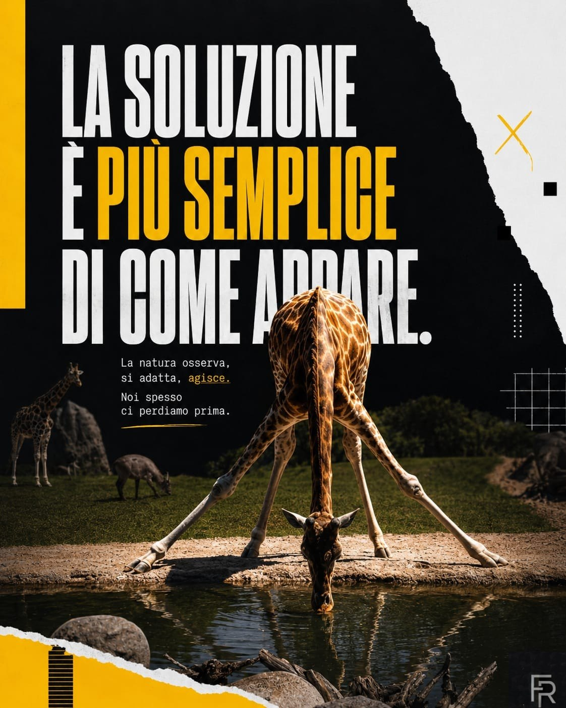
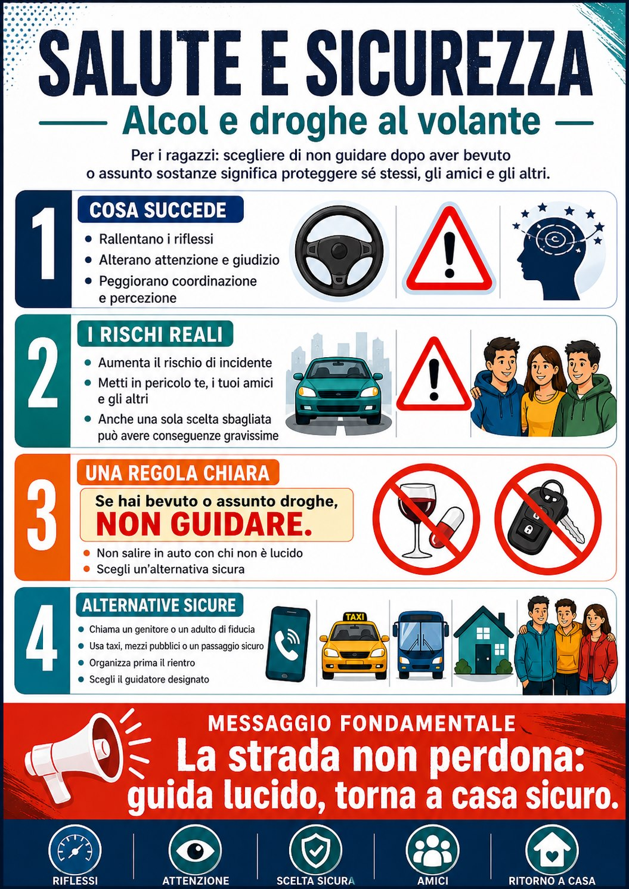
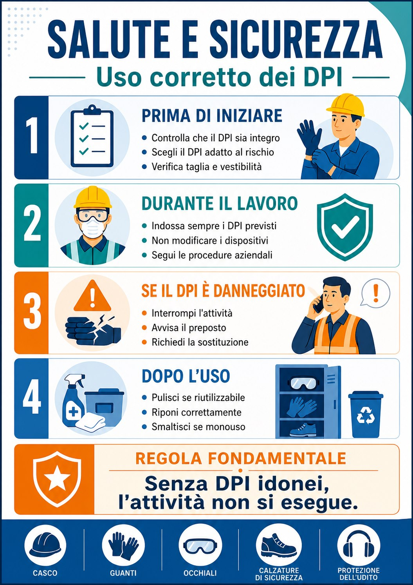

Infografie e cartellonistica per aziende
Materiali visivi per comunicare sicurezza, ambiente e procedure aziendali in modo chiaro e leggibile.

Il lavoro
In azienda molte informazioni sono importanti, ma rischiano di essere ignorate se sono troppo lunghe, tecniche o poco visibili.
- Infografie per procedure, flussi, regole e buone pratiche.
- Cartellonistica per sicurezza, ambiente, reparti e spazi comuni.
- Messaggi brevi, icone, colori e gerarchie pensati per essere capiti subito.
- Materiali pronti per stampa, affissione interna o distribuzione digitale.
Il risultato è una comunicazione aziendale più ordinata, utile e visibile, capace di sostenere comportamenti corretti nel quotidiano.
Lavori caricati
Materiali pensati per trasformare messaggi importanti in comunicazioni visive chiare, leggibili e difficili da ignorare.


